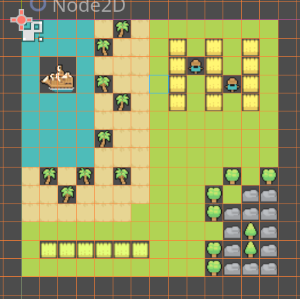
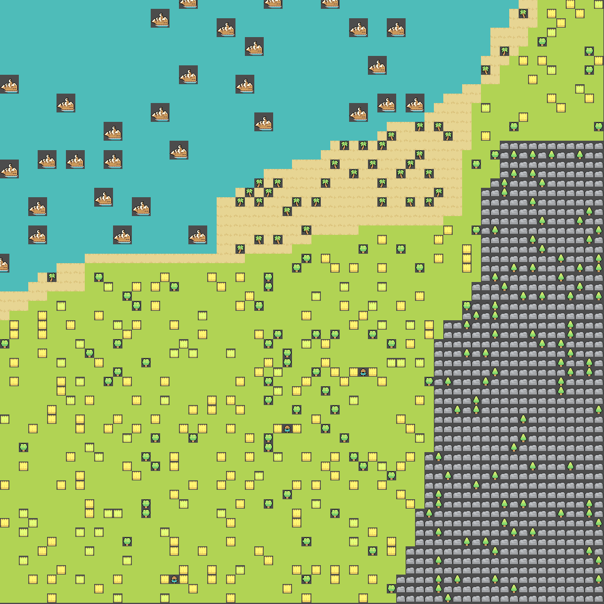

Featured Projects
Perlin and Pumpkins — Implicit Rendering
A fragment-shader-based scene featuring procedurally generated terrain, a day-night lighting cycle, and pumpkins. Use A/D to rotate the camera.
Tech: WebGL, FBM/Perlin Noise, SDF + Raymarched Implicit Rendering

TileMapGenerator — Procedural Tile Maps (Godot 4, C++)
A procedural tile map generator built as a Godot 4 GDExtension in C++. Implements the Wave Function Collapse algorithm, generating maps from sample tilemaps with probability-based propagation.
Tech: Godot 4, C++ (GDExtension), SCons, DSA

Sample
→

Generated Result
Survive the Armadillo — Horror Game
A small survival game where you control a glowing orb hunted by a boxing-glove armadillo. Move with WASD, hold space to use the flashlight.
Tech: WebGL, Three.js, JavaScript